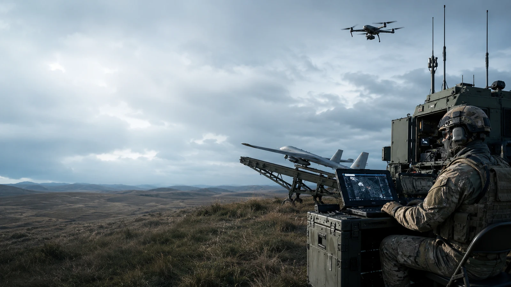
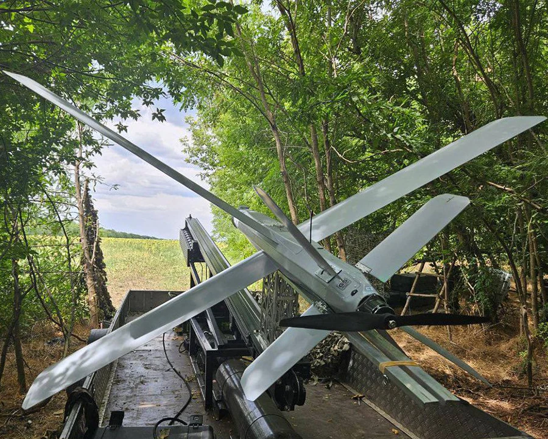

Оператор БПЛА — 65-й полк БПС
65-й полк беспилотных систем набирает кандидатов на контракт оператором БПЛА. Направление подходит тем, кто уверенно работает с техникой и готов пройти отбор. Опыт пилотирования желателен, но базовую подготовку можно пройти в учебном подразделении. Оформление проходит через ПОВСК Москвы — это наиболее частый канал с московским пакетом 2 300 000 ₽ единовременно — или через ПОВСК Чебоксар. Назначение в 65-й полк подтверждается только после проверки документов, ВВК и решения по итогам отбора.
Довольствие
от 260 000 ₽/мес
Итог зависит от должности, звания, района и подтверждённых надбавок.
Единовременная выплата
2 300 000 ₽ через ПОВСК Москвы
400 000 ₽ федеральной + 1 900 000 ₽ от Москвы. Для ПОВСК Чебоксар — уточнить до подписания.
Задачи оператора БПЛА
- Подготовка БПЛА и оборудования перед работой
- Управление разведывательными и FPV-дронами в рамках поставленных задач
- Наблюдение и передача данных с беспилотного аппарата
- Проверка связи, навигации и состояния оборудования
- Работа с картой, изображением и полётными данными
- Техническое обслуживание и мелкий ремонт аппаратов
- Работа в составе расчёта оператора БПЛА
Требования к кандидату
- Возраст от 18 до 45 лет
- Гражданство Российской Федерации
- Годность к выбранной должности по результатам ВВК
- Хорошая координация, внимание и устойчивость к нагрузке
- Уверенные навыки работы с компьютером и техникой
- Готовность пройти обучение и внутренний отбор

Хотите служить на должности «Оператор БПЛА»?
Оставьте заявку — специалист расскажет об условиях, поможет с документами и направит в подходящую воинскую часть.
Связаться по телефону или в мессенджерах
Короткий номер*1450Условия службы в 65-м полку
Довольствие от 260 000 ₽/мес
Сумма зависит от должности, звания, места службы и подтверждённых надбавок. Точный расчёт сообщают после определения назначения.
2 300 000 ₽ через ПОВСК Москвы
Федеральная выплата составляет 400 000 ₽. Москва добавляет 1 900 000 ₽ кандидатам, оформленным через московский канал. Для ПОВСК Чебоксар сумму нужно уточнять отдельно.
Подготовка оператора БПЛА
Программа включает теорию, тренировки на симуляторе, практические полёты и обслуживание техники. Объём курса зависит от исходных навыков и учебного плана.
Работа с беспилотными системами
Оператор осваивает управление, подготовку оборудования, чтение полётных данных и работу в составе расчёта.
Профильное назначение
Навыки и результаты обучения учитываются при распределении. Конкретная должность определяется после официального отбора.
Срок оформления
Срок зависит от готовности документов, ВВК и порядка направления. До проверки конкретной ситуации фиксированный срок не обещаем.
О 65-м полку беспилотных систем
65-й отдельный полк беспилотных систем (БПС) — специализированное подразделение Вооружённых Сил Российской Федерации, созданное для ведения разведки, корректировки огня и поражения целей с помощью беспилотных летательных аппаратов. Это современное подразделение, где ценятся интеллект, дисциплина и техническая смекалка.
Беспилотники — это «глаза и руки» подразделений: они обнаруживают цели, корректируют огонь, ведут наблюдение, доставляют грузы и выполняют точечные задачи. Оператор БПЛА работает с данными в реальном времени и принимает решения быстро и точно.
Полк оснащён современной беспилотной техникой различных типов: от малых разведывательных дронов до ударных FPV-систем. Специализация оператора БПЛА фиксируется организационно — в документах указывается профиль подготовки и учебный блок по беспилотным системам.
Служба в полку подходит для кандидатов с техническим складом ума, хорошей координацией и вниманием к деталям. Предшествующий опыт работы с БПЛА не требуется — полное обучение проводится на месте опытными инструкторами.
Программа обучения оператора БПЛА
Обучение начинается с первого дня — от симуляторов до реальных полётов. Курс практико-ориентированный и поэтапный. Кандидаты без опыта осваивают полный цикл: теория, сборка, полёты, тактика боевого применения.
- Устройство БПЛА и основные системы управления
- Навигация и оценка условий полёта
- Тренировки на симуляторе
- Практические полёты на учебных аппаратах
- Основы работы с FPV-дронами
- Сборка, диагностика и ремонт квадрокоптеров
- Работа с изображением и полётными данными
- Радиообмен, чек-листы и безопасность
- Работа в составе расчёта
Как заключить контракт в 65-й полк
Заявка и консультация
Вы сообщаете основные данные и задаёте вопросы об актуальном наборе.
Выбор канала оформления
Наш специалист подскажет оптимальный канал для вашей категории (Москва или Чебоксары) и организует трансфер до нужного ПОВСК.
Документы и ВВК
Выбранный ПОВСК проверяет комплект документов и организует официальный отбор.
Заключение контракта
Решение принимается при выполнении установленных требований.
Обучение
Программа зависит от выбранного направления и исходной подготовки.
Распределение
Возможность направления в 65-й полк подтверждается после обучения и решения уполномоченных лиц.



Записаться на службу по контракту
Заполните форму — специалист свяжется с вами
Дополнительные льготы и гарантии
Финансовые меры
- 2 300 000 ₽ единовременно при оформлении через ПОВСК Москвы
- Возможно списание кредитов до 10 000 000 ₽ — по 391-ФЗ от 23.11.2024 (контракты СВО с 01.12.2024) и расширяющему его 156-ФЗ от 25.05.2026 (контракты с 01.05.2026, явно включены супруги участника СВО); совокупный лимит — 10 млн ₽ на семью; мера оформляется отдельно
- В отдельных регионах могут действовать земельные меры для ветеранов боевых действий — уточняйте по месту регистрации
- Военная ипотека НИС — по правилам включения для вашей категории
Каналы оформления: через ПОВСК Москвы — наиболее частый с московским пакетом 2 300 000 ₽ единовременно — или через ПОВСК Чебоксар.
Страхование и социальная поддержка
- 3 000 000 ₽ по ФЗ-52 при тяжёлом ранении в 2026 году
- 1 000 000 ₽ по ФЗ-52 при лёгком ранении в 2026 году
- Государственное страхование жизни и здоровья при подтверждённом страховом случае
- Поддержка семьи — по федеральным и действующим региональным программам
В 2026 году федеральная выплата по ФЗ-52 составляет 3 000 000 ₽ при тяжёлом ранении и 1 000 000 ₽ при лёгком. Степень тяжести и страховой случай подтверждаются медицинскими и служебными документами. Страховщик — АО «СОГАЗ».
НИС: взнос государства в 2026 году — 411 184,90 ₽. Срок включения зависит от категории и даты первого контракта. Офицеры входят с первым контрактом; для солдат и сержантов действуют отдельные правила.
Вопросы и ответы
Как попасть в 65-й полк БПЛА?
Оставьте заявку и уточните актуальный набор. Оформление возможно через ПОВСК Москвы или ПОВСК Чебоксар. Затем нужно подготовить документы, пройти ВВК и официальный отбор. Направление в 65-й полк подтверждается после проверки кандидата.
Нужен ли опыт управления дроном?
Опыт будет преимуществом, но кандидатов без него тоже могут рассматривать. Подготовка включает теорию, симулятор, практические занятия и обслуживание БПЛА.
Сколько получает оператор БПЛА в 65-м полку?
Ориентир на странице — от 260 000 ₽ в месяц. Итог зависит от должности, звания, места службы и подтверждённых надбавок.
Какие требования к здоровью?
Годность определяет ВВК. Требования зависят от конкретной должности. Для оператора особенно важны зрение, координация и способность работать с техникой.
Что такое 65-й полк БПС?
Это профильное подразделение беспилотных систем. В нём нужны операторы, техники и другие специалисты расчётов БПЛА.
Какие дополнительные меры поддержки действуют?
Страхование по ФЗ-52 действует при подтверждённом страховом случае. Списание кредитов до 10 000 000 ₽ возможно при выполнении условий 391-ФЗ от 23.11.2024 (контракты СВО с 01.12.2024) или расширяющего его 156-ФЗ от 25.05.2026 (контракты с 01.05.2026, явно включены супруги участника СВО); совокупный лимит — 10 млн ₽ на семью, мера оформляется отдельно. Земельные меры зависят от места регистрации и региональной программы.
Какие документы нужны?
Перечень зависит от этапа отбора. До поездки уточните актуальный список для выбранного ПОВСК: паспорт, военный билет при наличии, документы об образовании и медицинские справки.


Все услуги бесплатны для кандидата
Весь процесс оформления контракта структурирован и прозрачен. Мы не взимаем никаких денежных средств — ни за консультацию, ни за сопровождение документов, ни за направление в воинскую часть.
Расходы на проезд до пункта отбора (ПОВСК) компенсируются.